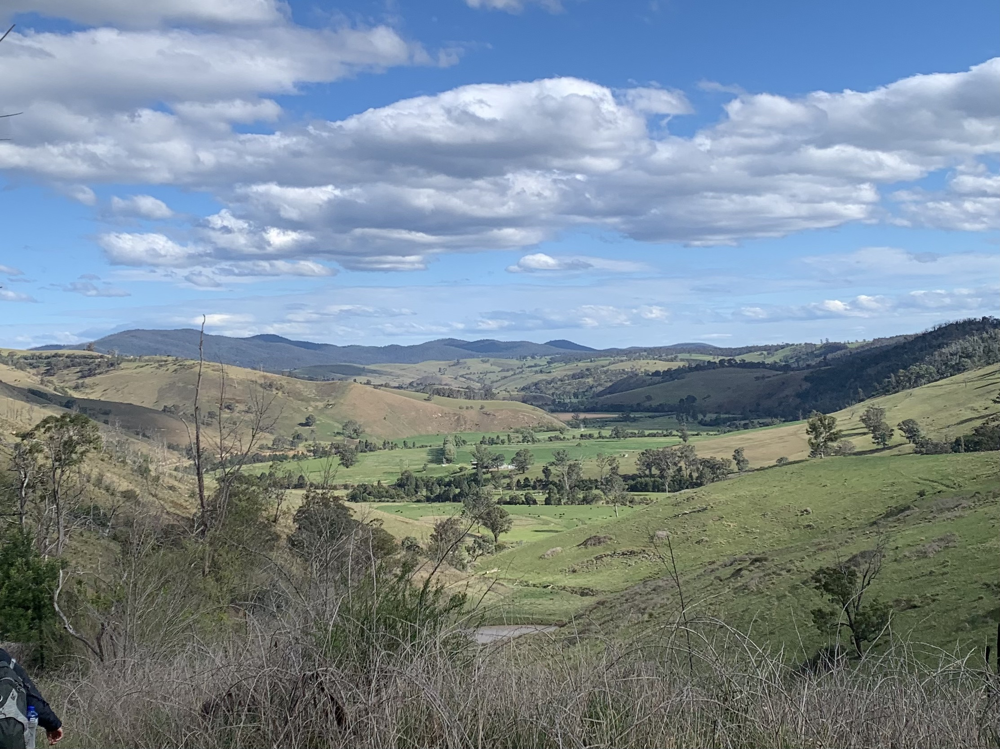

El Tectonita
projects
map
about
Hey there, I'm El!
I'm a field-focused young geologist, with a keen interest in geological mapping. I'm studying geology at Monash Universiy in Melbourne. This site displays a few projects of mine, completed either solo or as a part of my studies.
~ Recent Projects ~

Broken Hill Mapping Project
A 14 day field camp in remote Central NSW, mapping the structure and metamorphism of an intensely deformed pre-Cambrian terrane. Production of a detailed geological map and cross section.
Omeo Isograds & Volcanics
- Mapping of metamorphic mineral isograds betweeen Omeo and Switft's Creek, through a historic gold mining region.- Investigating the relationship between intrusive syenite and volcaniclastic deposits at Day Hill.
